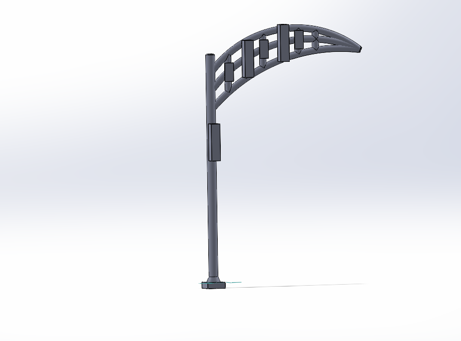

Structural Constraints
- Span 26-foot road clearance
- 18 ft minimum overhead clearance
- Factor of safety ≥ 2 under all loads
- Survive 95.7 mph wind loading
- Support 3 × 60 lb luminaires
- Support 3 × 5 lb traffic signs
ME 347 · Spring 2026 · Structural Design
Decorative Cantilever Traffic Signal Pole
Completed — May 2026
Overview
Requirements
Ideation
Final Model
Analysis
Materials
Takeaways